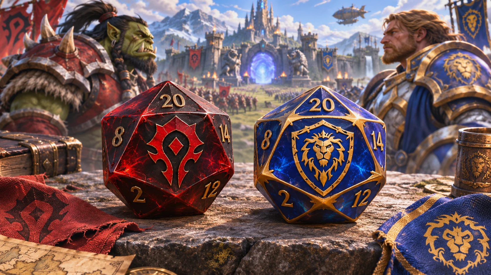
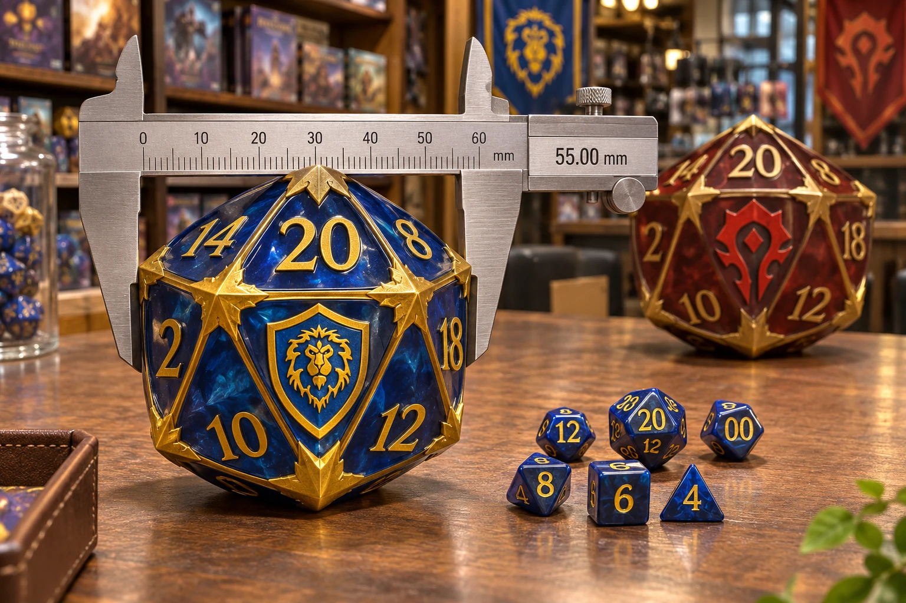

An oversized D20 can do a job a standard seven-piece set cannot: make a dice display visible from across a store, give a gift buyer a memorable object, or create a premium step-up for a collector. But size alone does not make a product a good buy. A large-format die takes more shelf space, needs stronger packaging, may not fit a normal rolling tray, and must still be easy to read. For a retailer, the useful question is not simply “Is this giant D20 eye-catching?” It is “What customer need does it serve, and can the product earn its space and landed cost?”
This guide is for local game stores, online dice retailers, distributors, publishers, and tabletop brands evaluating oversized D20 dice or custom giant D20 products. It covers size, readability, materials, sample inspection, packaging, MOQ, display, and a low-risk test plan. It also uses current licensed releases as evidence of product activity, not as proof that every oversized die will sell.
The quick answer: how should a game store buy oversized D20 dice?
- Compare measured dimensions rather than relying on terms such as “jumbo” or “oversized.”
- Check every face for legibility under both store lighting and ordinary tabletop light.
- Ask how inserts, internal objects, number fills, and finishing are controlled.
- Confirm sample, packaging, per-SKU MOQ, carton dimensions, and reorder assumptions in writing.
- Keep a giant D20 distinct from the standard dice assortment in the product description and shelf label.
Why oversized D20 dice are a timely product conversation
Several public announcements show that dice publishers are treating large D20s as a distinct collectible and display format. Hasbro's 2026 lookbook describes Dungeons & Dragons Fizban's Fortune as a premium line of oversized D20 dice inspired by dragon imagery. Industry trade outlet ICv2 reported that FanRoll's Mega D20 Decision Die was scheduled for retail in November 2026. ICv2 also reported on Sirius Dice's Dungeons & Dragons x World of Warcraft accessories line, including faction-themed sets and a planned 55 mm D20 collectible in a later release wave.
Separately, Wizards Play Network lists the wide release of Dungeons & Dragons: World of Warcraft for November 17, 2026. That date refers to the tabletop gameplay expansion, not a guarantee that every related dice accessory shares the same street date. Retailers should check each distributor's current listing before advertising an arrival date. These announcements demonstrate product development and shelf storytelling around premium dice; they do not publish sell-through data or establish a universal demand forecast.
For independent brands and stores, the practical takeaway is to study the format, not copy its protected expression. Oversized D20s can be built around original dragon, elemental, celestial, dungeon, or faction-inspired themes. Avoid third-party names, logos, character art, and recognizable insignia unless you have authorization for that specific commercial use. A store-owned emblem or original visual system can still communicate identity without presenting an unlicensed product as official merchandise.

Choose the product role before choosing the die
Oversized D20 dice can sit in several different parts of a retail assortment. The role determines which specifications matter most. A die marketed primarily for play needs a comfortable roll, suitable table behavior, and clear numbers. A display collectible needs visual impact, a stable presentation, and packaging that communicates the design. A gift product needs easy-to-understand contents and a package that feels complete. An event giveaway may prioritize portability, cost, and logo placement. Do not assume one SKU can do all four jobs equally well.
| Product role | Primary buyer question | Checks before ordering |
|---|---|---|
| Playable novelty die | Can customers roll it comfortably? | Weight, rolling surface, tray fit, number legibility, construction details |
| Display collectible | Does it attract attention and present securely? | Face visibility, stand or box, shelf footprint, protection, photo accuracy |
| Gift or premium upgrade | Does the full package feel worth gifting? | Box quality, insert, story card, care information, contents and value clarity |
| Event or brand item | Can it be transported and branded reliably? | Print area, artwork approval, pack-out, carton size, delivery deadline |
Write the role on the buying brief. For example: “55 mm display D20 for a front-counter collector shelf; occasional rolling is acceptable, but packaging must keep the 20 face visible.” That is more actionable than “premium giant D20.” It helps the supplier recommend the appropriate material, finish, packaging, and sample process.
Compare size, weight, and handling in real terms
There is no single industry-wide cutoff that turns a D20 into an “oversized” D20. The term is descriptive, so ask for the actual dimensions and clarify how they are measured: point to point, face to face, or maximum width. A 55 mm D20 is about 2.17 inches across using a simple millimeter-to-inch conversion, but the quoted dimension still needs a reference drawing or sample. Also request the product's weight and the finished package dimensions. A die that looks modest in a digital rendering can occupy a surprising amount of counter and shipping space.

Ask for a size comparison photograph next to a standard seven-piece set, a hand, or another familiar object. For a retailer, that comparison becomes useful on a product page and helps reduce misunderstandings after purchase. If the item will be sold online, request accurate product photos from multiple angles and publish its measurements near the top of the listing. Do not make customers infer size from the word “giant.”
Test handling with the actual intended surface. A heavy or unusually large D20 can travel farther than a small resin set, strike nearby pieces, or fail to fit a compact dice tray. If it is intended mainly for display, say so clearly. If the manufacturer claims that it is suitable for regular rolling, test the claim with the pre-production sample and document the recommended surface. Do not use a display base as a rolling accessory unless the supplier confirms that it is designed for that purpose.
Include storage and shipping in the size decision. Measure the shelf depth, peg or hanging options, counter footprint, and shelf height. If a product arrives in an oversized box, compare the unboxing value with the extra freight and storage volume. The correct size is the one that supports the product role and buying experience, not automatically the largest available format.
Check number readability on all twenty faces
A giant D20 is often designed to be noticed, but it still needs readable numerals. Inspect the 20, the 1, and several side faces in the same sample. Large numerals can crowd a face, decorative fonts can become difficult to distinguish, and reflective finishes may create glare under overhead lights. Ask for close-up photography in neutral lighting; a dramatic render can hide weak contrast or an inconsistent number fill.
Review contrast at three distances: in the hand, at the table, and from the shelf edge. A color combination that looks attractive in a studio image may be hard to read under warm retail lighting. Test the die under the store's actual lighting if possible. Check whether the number color is consistent across all facets and whether glitter, translucent layers, metallic pigment, or an internal insert interferes with the numerals.
Readability also affects accessibility. Do not treat a high-contrast palette as a substitute for user testing, but do ask whether numbers can be distinguished quickly by players with different visual needs. Make listing images large enough to inspect, add descriptive alt text, and avoid color-only distinctions in product copy. A buyer comparing two faction colorways should be able to identify them by name and image, not just by “red” or “blue.”
If the design replaces the 20 with an emblem or custom mark, verify that the die's use and the game rules support that choice. The marked face should be unmistakable to the player, and the product description should explain it. For custom logo or symbol dice, explore the site's custom dice manufacturing process and send reference artwork with the quote request rather than assuming every mark can be printed at any size.
Inspect sample construction before committing to wholesale oversized D20 dice
Oversized dice can use different constructions, including solid resin or acrylic-style bodies, metal, layered pours, translucent shells, and internal decorative components. The material name alone does not tell a buyer how the product feels, how the numbers are applied, or how it will tolerate handling. Request a physical sample or sample kit and compare it with the written specification. If a sample contains an internal figure, coin, foil, or other insert, ask how it is positioned and whether production pieces are expected to match the sample.
- Dimensions and weight: measure the sample and compare with the product sheet and package label.
- Faces and edges: look for chips, rough seams, inconsistent polish, sharp burrs, or visibly distorted facets.
- Number fill: inspect the fill on every face for gaps, smears, uneven depth, and contrast changes.
- Internal effects: confirm that inclusions are secure, centered as specified, and not presented as functional balance features unless verified.
- Rolling behavior: test on a suitable tray or tabletop using a consistent method; do not infer statistical fairness from a handful of rolls.
- Batch repeatability: ask how the supplier checks dimensions, finish, artwork position, and packaging across production quantities.
Be careful with claims such as “perfectly balanced,” “casino grade,” or “guaranteed fair.” Those are specific claims and should not be repeated without appropriate evidence from the supplier. For a collectible or display die, a retailer may care more about finish and presentation than a precise rolling claim. For a die intended for normal play, request the quality information and test method that support the intended use.
Keep a record of the approved sample. Photograph the faces, package, dimensions, and any custom details, then ask the supplier to identify which characteristics are controlled in bulk production and which may show normal variation. That approved reference reduces ambiguity when a reorder arrives or a custom artwork revision is proposed.
Build an assortment that gives oversized D20s a clear place
An oversized D20 should usually complement a store's standard dice range, not replace the core. A balanced shelf can have a dependable entry-level seven-piece set, a small number of theme-led sets, and one or two premium display items. The large-format die acts as a focal point or gift anchor; the standard sets provide accessible options for players who need dice for a session. Link the display item to the broader assortment with a shelf card or QR code, but keep product pricing and contents clear.
For an initial test, choose differences that customers can understand quickly: one original theme, one color family, one material or finish, or one limited display format. Avoid ordering five near-identical giant D20s just because they look different in a supplier's thumbnail. Each extra SKU may divide MOQ, occupy shelf space, complicate reordering, and make it harder to tell which feature actually attracted a buyer.
Decide how the oversized die appears in the store. A front counter can support one secure display sample and a small number of boxed units. A wall display may need hang tabs or a clear front panel. An online listing benefits from a photo that shows the scale next to a standard D20 and a seven-piece set. If the item is behind a glass counter, staff should be able to explain its dimensions, material, use, and package contents in one sentence.
Use sales data to decide whether the product earns expansion. Record units received, units sold, remaining inventory, display location, customer questions, damage, discounts, and stockout dates. A single sale is not proof of repeat demand, while slow sales may reflect poor placement or confusing packaging. Compare with the store's own goals, not a universal industry benchmark. The broader bulk DND dice buying guide for game stores explains how to build a balanced assortment and plan reorders by SKU.
Plan packaging for display, protection, and shipping
Packaging has more work to do when the die is large. It should protect corners and number fill during transit, keep the item visible or easy to open on the shelf, and state what is included. Ask whether the product needs a formed insert, foam, molded tray, clear window, stand, or separate storage case. The right choice depends on the material, weight, collector expectations, and whether the die is sold loose, boxed, or bundled with other dice.
Request package measurements and carton pack-out details before reviewing freight. The per-unit product price can be only one part of the landed cost; a larger package may change carton quantity, shipping volume, and warehouse handling. If products are sold in multiple colors or themes, confirm that the outer labels or SKU stickers make variants easy to pick and replenish.
For private-label lines, provide the logo, color specification, product naming, barcode, warning or care copy, and package dieline requirements early. Ask whether the packaging has its own MOQ and whether the same box structure can be reused across several colorways. Reusable structure with variant-specific sleeves or labels can simplify a test, but confirm the actual cost and availability with the supplier. See the site's custom dice packaging options and private-label packaging program for formats and buyer-brief details.
Make packaging claims match the real product. If the internal effect is decorative, do not describe it as a liquid core or a moving insert unless it actually functions that way. If a die is a display piece, state whether a stand is included. A precise listing prevents returns and keeps customer service questions manageable.
Plan a low-risk test order and confirm MOQ by component
There is no single MOQ that applies to every oversized D20. Quantity may depend on material, tooling, color, number fill, custom artwork, internal inserts, packaging, and the number of variants. Ask the supplier to separate the MOQ for the die from the MOQ for printed packaging, display cartons, and custom components. A simple stock-style sample may have different requirements from a fully customized run. Do not compare quotes until you know which specifications each price includes.
A sensible first process is:
- Define the role and target customer. Decide if the item is for play, collecting, gifting, events, or display.
- Shortlist one or two designs. Keep the test small enough to interpret results and meet practical supplier minimums.
- Review the sample. Record dimensions, weight, readability, material, finish, and package fit.
- Confirm the commercial details. Ask for unit cost by quantity break, one-time setup charges, packaging cost, sample lead time, production lead time, and shipping assumptions.
- Place a controlled test. Use an order size your store can display and finance without relying on an unproven demand forecast.
- Set a review date. Compare sales, margin, damage, and customer feedback over a defined period before expanding the line.
Ask what happens if the production sample is approved but the final order changes in weight, color, number placement, or package dimensions. Request a written approval step for artwork and a clear standard for acceptable variation. If an event or holiday deadline matters, confirm the schedule and shipping route before taking customer preorders. Lead times can change with season, destination, and production capacity.
Evaluate margin and shelf productivity, not just unit price
For a retail buyer, the relevant cost is the landed unit cost: product plus packaging, freight, duties or taxes where applicable, and other per-unit expenses. A simple gross-margin planning formula is (retail price minus landed unit cost) divided by retail price, multiplied by 100. Use your own accounting method for decisions; the formula here is a planning aid, not a profit guarantee.
Oversized products also use more shelf or counter space than a standard set. Consider how many units fit in the display, whether one sample must be opened, and how easily boxed inventory can be stored. A product with a higher selling price may still be a weak use of space if it sits too long, requires frequent discounting, or arrives with avoidable damage. Conversely, one display piece may help customers notice the full dice section. Track its effect rather than assuming it drives nearby sales.
For an online store, budget for multiple product photos and dimensional information. A customer should see the number faces, finish, packaging, and scale reference before ordering. Clear photos and an accurate size caption can reduce avoidable returns. If the supplier cannot provide images suitable for your listings, include photography in your own launch cost.
Use scenario planning rather than a single optimistic sales estimate. Write down a conservative, expected, and strong result for the first review period. Decide in advance what result warrants a reorder, a new colorway, a packaging revision, or a markdown. This turns an exciting novelty into a measurable category decision.
What to send when requesting an oversized D20 wholesale quote
A good quote brief helps a supplier respond to the actual project. Include the decisions already made and identify open questions rather than leaving the factory to guess. For a first inquiry, provide:
- Buyer and channel: local game store, distributor, online retailer, publisher, dice brand, event, or subscription box.
- Intended role: playable novelty, display collectible, gift item, event piece, or branded promotion.
- Target specification: approximate point-to-point or face-to-face dimensions, target weight, material preference, finish, number color, and any internal insert.
- Design and rights: original theme, color references, logo files, and confirmation that artwork is cleared for the intended commercial use.
- Quantity plan: sample quantity, first order, number of variants, and likely reorder range.
- Packaging: retail box, window box, stand, protective insert, barcode, private label, or display carton.
- Market and schedule: delivery country, sales channel, target launch date, and preferred shipping method.
- Questions: MOQ by component, sample cost, setup fees, quality checks, package dimensions, and lead-time assumptions.
Ask the supplier to show cost breaks and explain what changes when quantity rises. Clarify whether the quote includes a sample, custom packaging, printing, inserts, and freight. If the project uses a custom symbol or large logo face, request a digital proof and confirm how the mark will look on every relevant facet. You can review wholesale dice options, read the wholesale dice MOQ guide, or use the quote form to share product and delivery requirements.
Common oversized D20 buying mistakes
- Choosing by render alone: a rendering cannot confirm physical weight, finish, legibility, or package fit.
- Assuming bigger means premium: perceived value depends on materials, finishing, presentation, and customer expectations, not dimensions alone.
- Calling a novelty die a regular-play die without testing: customers need accurate intended-use information.
- Ordering too many variants: too many low-volume SKUs can spread MOQ and make the test impossible to interpret.
- Ignoring packaging volume: large boxes affect storage, shipping, and shelf capacity.
- Using protected artwork without permission: a trend reference does not automatically allow commercial copying.
- Reordering from one anecdote: use a defined sales window and track stockouts, placement, discounts, margin, and damage.
A retailer's sample approval checklist
- Measured dimensions and weight match the specification sheet.
- All twenty numbers are recognizable at arm's length in the intended lighting.
- Faces, edges, number fill, and finish are consistent with the approved sample.
- Any internal insert is described accurately and does not obstruct the face markings.
- Rolling behavior has been checked on a suitable surface if rolling is part of the product promise.
- The package protects the die and gives customers a clear view of contents.
- Retail and shipping carton dimensions, barcode placement, and SKU identification are confirmed.
- MOQ, sample approval, production lead time, and reorder expectations are documented.
- All supplied branding and visual artwork are original or cleared for commercial use.
Oversized D20 dice FAQ
What size is an oversized D20?
There is no universal cutoff. A 55 mm die is one large-format example, but ask the supplier for measured dimensions, weight, and a scale photograph rather than relying on the label “oversized.”
Can an oversized D20 be used for normal D&D play?
Some large dice can be rolled, but weight, table space, and dice-tray fit matter. Treat it as a display or novelty item unless the sample has been tested and the intended use is clearly stated.
Are oversized D20 dice fair?
Size alone does not establish fairness. Ask about construction, inserts, tolerances, inspection, intended use, and any quality documentation. Do not repeat a fairness claim without evidence.
What should I inspect before buying wholesale oversized D20 dice?
Check dimensions, weight, all-face readability, finish, construction, package protection, shelf presentation, sample-to-production controls, MOQ, and lead-time assumptions.
Can I customize an oversized D20 with a famous game logo?
Do not assume that a recognizable reference permits commercial use. Use original artwork or obtain the required authorization for brand names, logos, symbols, and character art. This guide is not legal advice.
Sources used for the market examples
- Hasbro 2026 Lookbook: describes the planned Dungeons & Dragons Fizban's Fortune premium oversized D20 line.
- ICv2: Make Adventuring Choices with New D&D Mega D20 Decision Die: trade coverage of a large-format D20 retail announcement.
- ICv2: Sirius Dice Announces Dungeons & Dragons x World of Warcraft Accessories Line: trade coverage of announced faction dice and later oversized D20 products.
- Wizards Play Network: Dungeons & Dragons World of Warcraft: official product information and the gameplay expansion release date.
- D&D Beyond: Everything You Need to Know About D&D World of Warcraft: official background on the crossover product.
- U.S. Copyright Office: What Visual and Graphic Artists Should Know About Copyright and USPTO: What Is a Trademark?: general background on artwork and brand identifiers.
Release information is cited as a market signal, not proof of sales performance. Check current distributor information for availability and dates. The buying recommendations are editorial guidance; verify product specifications, quality controls, local demand, and rights before purchasing or manufacturing.
Plan a focused oversized D20 test order.
Share the intended product role, target dimensions, material direction, quantity, packaging, destination, and launch date. We can review available options and clarify sample, MOQ, and quote assumptions.
For a broader sourcing plan, compare the bulk DND dice buying guide, the faction-themed RPG dice guide, and the 2026 RPG dice trends guide.